[AR] Back-fill antigen and probable cases numbers starting 9/3
State or US: Arkansas
Describe the problem Starting 9/3 Arkansas started providing the information about Total Antigen Tests, Positive Antigen Tests, Negative Antigen Tests and Probable Cases. This is to backfill the information from those days.
Link to data source Upload PDFs here please
Comments
Before 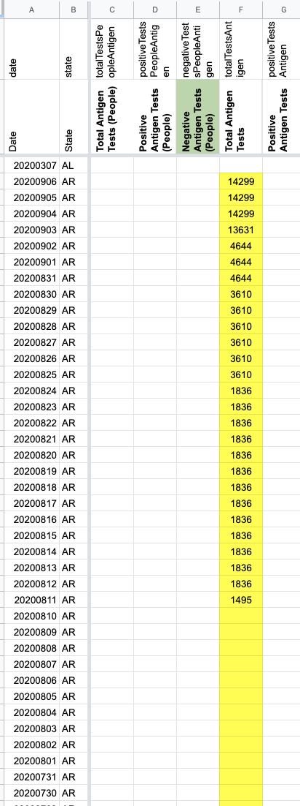 After Note: It looks like the totals were consistently backfilled for 9/1 and 9/2 (and 9/3 and 9/4) resulting in different deltas in each day of the report. I used the least recent deltas from 9/3 to make the math work so that the numbers for 7/31-8/31 would sum to the subtraction and to keep the timeseries continuous with the explicit “totals” field that I was drawing from for the 9/3 value. This also gets us closest to the “date reported” meaning of these column.
For flat line data before 8/31: Because the time ranges represent all the testing done that range, I think we can only associate them with the last day of each range onward instead of applying it to the beginning of the range. This gets us back to 7/31 rather than 6/11.
9/2 = 13631 - 533 = 13098 9/1 = 13098 - 590 = 12508 8/31 = 7090 + 5418 = 12508 7/31 - 8/30 = 7090 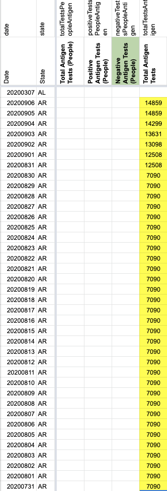
Positive and negative
Applying the same principles of applying updates only from the last day of the range onward and using the deltas from the 9/3 screenshot.
Before 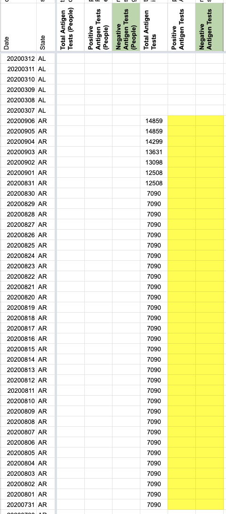
After negative calculations 9/2 = 11522 - 474 = 11048 9/1 = 11048 - 434 = 10614 8/31 = 6005+4609 = 10614 7/31 - 8/30 = 6005
positive calculations 9/2 = 2109 - 59 = 2050 9/1 = 2050 - 156 = 1894 8/31 = 1085+809 = 1894 7/31 - 8/30 = 1085
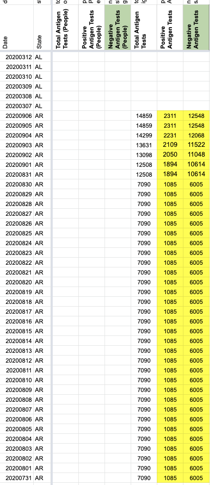Probable Cases also affects totals and confirmed (since we want to grab them from the PDF). resulted in overriding yesterday’s confirmed value
9/5 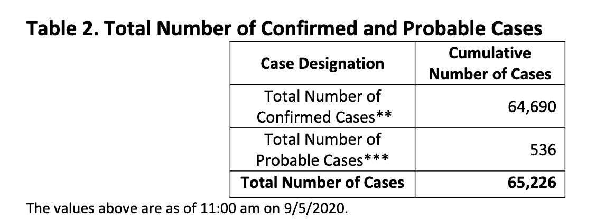
9/4 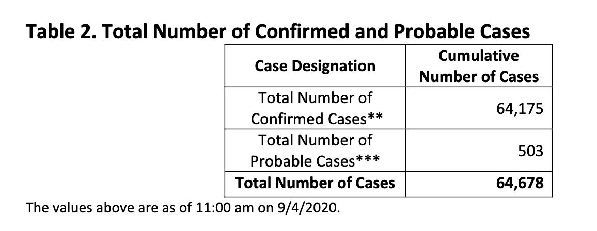
9/3 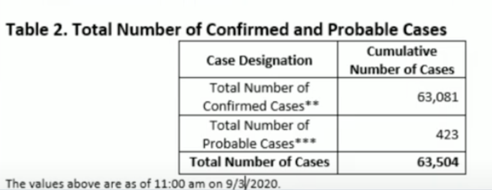
Before 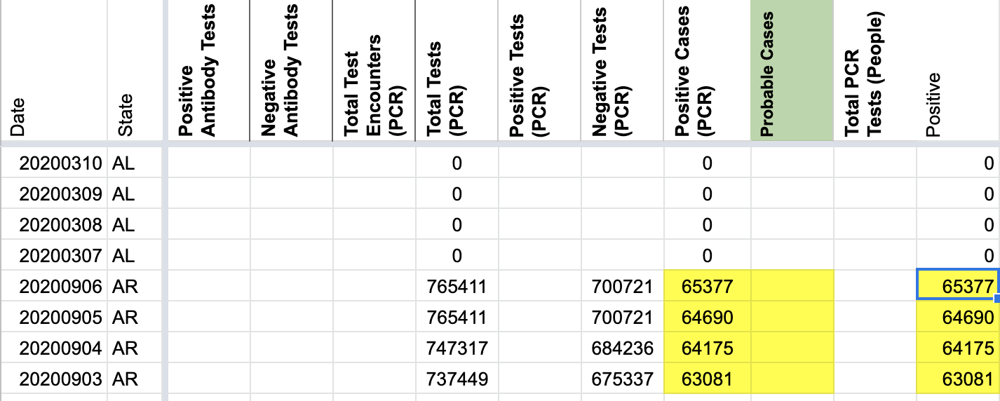
After 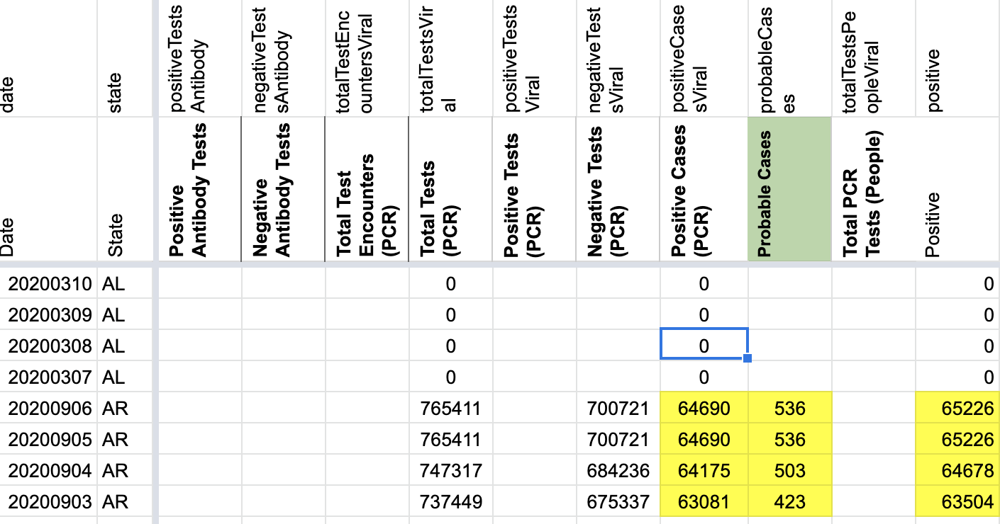
September 3: 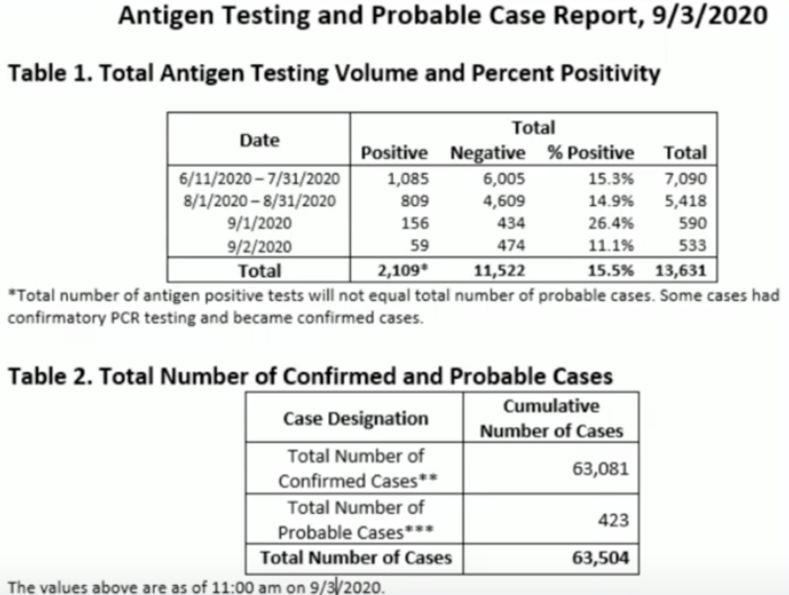
September 4: 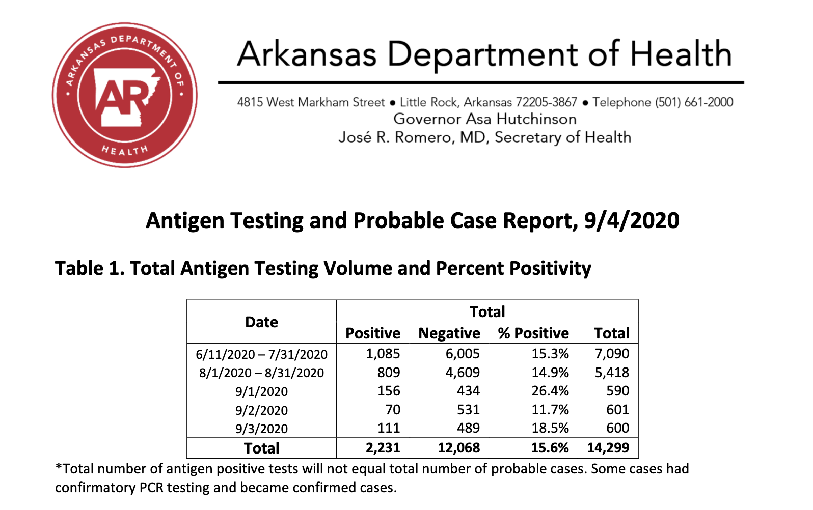
September 5 and 6 (same PDF both days): 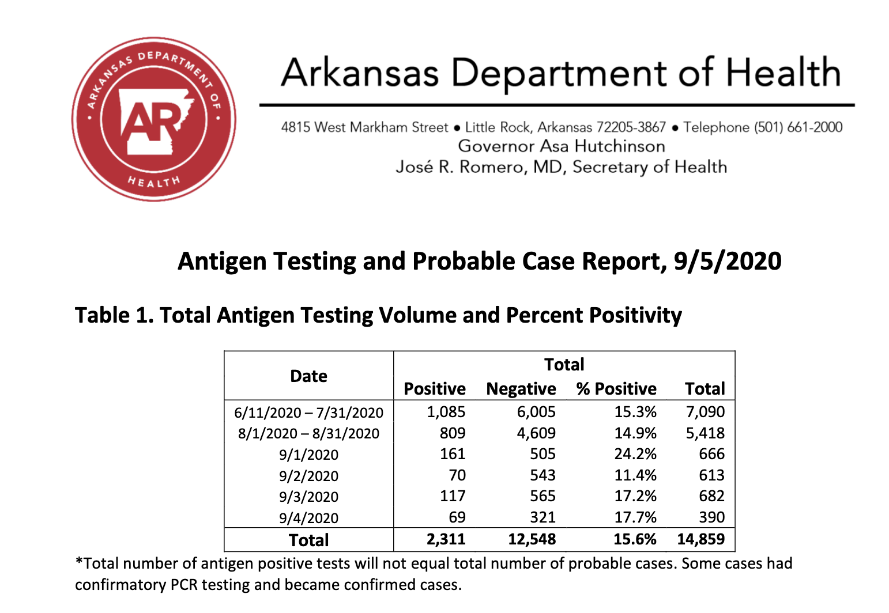
We should also backfill back to 6/11 using the values provided in the chart